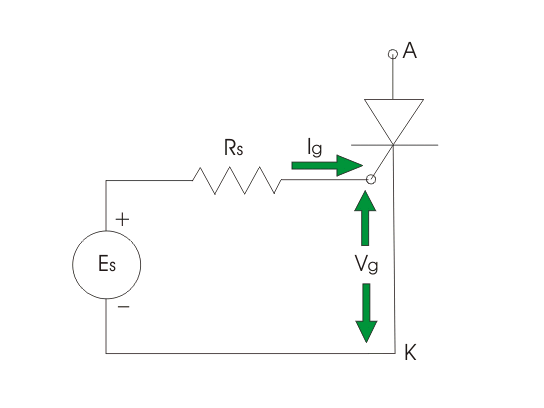

Gate Characteristics of SCR
A gate non triggering voltage (Vng) is also mentioned at the time of manufacturing of the device. All noises and unwanted signals should lie under this voltage to avoid unwanted turn on of the thyristor.

Curve 1 represents the lowest voltage values that must be applied to turn on the SCR and curve 2 represents the highest values of the voltage that can safely applied. So from the figure we can see the safety operated area of SCR is bcdefghb.
Now, from the triggering circuit, we get,
Es = Vg + IgRs
Where,
Es = gate source voltage
Vg = gate cathode voltage
Ig = gate current
Rs = gate source resistance
A load line of gate source voltage is drawn as AD where OA = Es and OD = Es/Rs which is trigger circuit short circuit current. Now, let a VI characteristic of gate circuit is given by curve 3. The intersection point of load line (AD) and curve 3 is called as operating point S. It is evident that S must lie between S1 and S2 on the load line. For decreasing the turn ON time and to avoid unwanted turn ON of the device, operating point should be as close to Pgav as possible. Slop of AD = source resistance Rs. Minimum amount of Rs can be determined by drawing a tangent to the Pgav carve from the point A.
 by
by